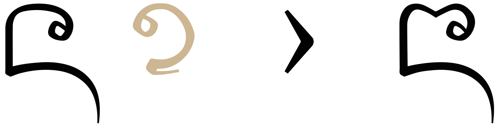

This page brings together basic information about the Tai Tham (Lanna) script and its use for the Northern Thai language. It aims to provide a brief, descriptive summary of the modern, printed orthography and typographic features, and to advise how to write Northern Thai using Unicode.
Good Tai Tham fonts are hard to find, especially for Northern Thai. The default font used for Northern Thai in this page is CR Insom LannaWF. Note that discussions were held at the Unicode Consortium that may change the ordering of character sequences in the future.
Origins of the Tai Tham (Lana) script, 13thC – today.
Phoenician
└ Aramaic
└ Brahmi
└ Tamil-Brahmi
└ Pallava
└ Old Mon
└ Tai Tham
+ Burmese
+ Mon
+ Sgaw Karen
+ Shan
+ Chakma
+ Ahom
+ Tai Le
+ Khamti
Northern Thai is is spoken by the people of Lanna, Thailand, with a smaller community of Lanna speakers in northwestern Laos. Few of the six million speakers of Northern Thai are literate in the Tai Tham script, although there is some rising interest in the script among the young. Since the beginning of the 20th century, the Thai script has been used for the Northern Thai language, although the fact that Thai only has 5 tones to Northern Thai's 6 makes this problematic.
Use of the Lanna traditional script is now largely limited to Buddhist temples, where many old sermon manuscripts are still in active use. There is no active production of literature in the traditional alphabet. The modern pronunciation differs from that prescribed in spelling rules.
ᨲ᩠ᩅᩫᨾᩮᩥᩬᨦᨣᩴᩤᨾᩮᩬᩨᨦ
In the Thai script this is คำเมือง.
The Lana script is derived from Mon, and before that Pallava.
The Tai Tham script is an abugida, ie. consonants carry an inherent vowel sound that is overridden using vowel signs. In Tai Tham, consonants carry an inherent vowel. See the table to the right for a brief overview of features for the modern Northern Thai orthography.
Northern Thai text runs left to right in horizontal lines. Words are not separated by spaces, however syllables may be separated by ZWSP, as long as they don't fall inside a stack.
Each onset consonant is associated with a high, mid, or low class related to tone. Tone is indicated by a combination of the consonant class, the syllable type (checked/unchecked), plus any tone mark.
Tai Tham has stacked consonants, but these do not necessarily indicate consonant clusters. The script is unusual in that any consonant in a stack can retain its inherent vowel, or be associated with a vowel sign. The sakot, which produces stacks, is never visible.
Stacks can span word boundaries.
Syllable-initial clusters use 2 dedicated code points for the medial l, and a subjoined letter for medial w.
Syllable-final consonant sounds can be written using 6 special diacritics, but otherwise use ordinary letters, which may or may not be subjoined depending on the context.
Other post-consonant vowels are written using 19 combining marks and 3 consonant letters (2 of which as subjoined forms). Unlike Thai and Lao, all vowel signs are combining marks, and are stored after the base character. Vowels are often written differently when they appear in a closed vs. open syllable. There are 5 pre-base vowel signs, but no circumgraphs.
This page lists 29 multipart vowels (made from 9 vowel signs, and 3 consonants/diacritics). Multipart vowels can involve up to 5 glyphs, which can surround the base consonant(s) on up to 4 sides.
Click on the sounds to reveal locations in this document where they are mentioned.
Phones in a lighter colour are non-native or allophones.
Vowel sounds
Plain vowels
Diphthongs
Consonant sounds
labial
alveolar
post-
alveolar
palatal
velar
glottal
stops
pb
td
k
ʔ
aspirated
pʰ
tʰ
affricates
t͡ɕ
fricatives
f
s
x
h
nasals
m
n
ɲ
ŋ
approximants
w
l
j
The glottal stop is pronounced after short open vowels. An initial glottal stop is also pronounced before independent vowels (see standalone).
Syllable-final
labial
alveolar
palatal
velar
glottal
stop
p̚
t̚
k̚
ʔ
nasal
m
n
ŋ
approximant
w
j
All final stops are unreleased@Wikipedia,https://en.wikipedia.org/wiki/Northern_Thai_language#Final_consonants.
Tone
The Chiang Mai dialect of Northern Thai has 6 tones. They are illustrated in fig_tones, which is taken from Wikipedia.
The six tones of Northern Thai.
Wikipedia provides the following information for the 6 phonemic tones for unchecked syllables in the Changmai dialect of Northern Thai. (It also has sound recordings.)wnl,#Consonants
Tone
Representations
Example
low-rising
˨˦
24
ǎ
ᩉᩖᩮᩢᩣ
mid-low
˨
22
à
ᩉᩖᩮᩢ᩵ᩣ
high-falling
glottalised
˥˧
53
a᷇
ᩉᩖᩮᩢ᩶ᩣ
mid-high
˧
33
ā
ᩃᩮᩢᩣ
falling
˥˩
51
â
ᩃᩮᩢ᩵ᩣ
high rising-falling
glottalised
˦˥˦
545
á
ᩃᩮᩢ᩶ᩣ
This is the list for checked syllables.wnl,#Consonants
Tone
Representations
Example
low-rising
˨˦
24
ǎ
ᩉᩖᩢᨠ
high-falling
˥
55
a᷇
ᩃᩢ᩠ᨠ
low
˨
22
à
ᩉᩖᩣ᩠ᨠ
falling
˥˩
51
â
ᩃᩣ᩠ᨠ
The mapping of tones to characters is described in tones.
Dashes are used to indicate the location of a consonant or consonant cluster. Prescript vowel signs have been stored before the hyphen because of the limitations of the font, but in reality all vowel signs should occur after the consonant they modify.
Vowel summary table
The following table summarises the main vowel to character assigments.
ⓘ represents the inherent vowel. Diacritics are added to the vowels to indicate nasalisation (not shown here). Standalone vowels are shown in the right-hand column.
a following a consonant is not written, but is seen as an inherent part of the consonant letter, so ka is written by simply using the consonant letter.
Post-consonant vowels
Vowels following consonants written using 19 combining marks and 3 consonant letters (2 of which as subjoined forms). Unlike Thai and Lao, all vowel signs are combining marks, and are stored after the base character. Vowels are often written differently when they appear in a closed vs. open syllable. There are 5 pre-base vowel signs, but no circumgraphs.
This page lists 29 multipart vowels (made from 9 vowel signs, and 3 consonants/diacritics). Multipart vowels can involve up to 5 glyphs, which can surround the base consonant(s) on up to 4 sides.
Combining marks used for vowels
ᨠᩥ
kiU+1A20 LETTER HIGH KA + U+1A65 VOWEL SIGN I
Northern Thai uses the following dedicated combining marks for vowels. They may be used on their own, or in combination with others (see compositeV).
ᩥ␣ᩦ␣ᩧ␣ᩨ␣ᩩ␣ᩪ␣ᩮ␣ᩫ␣ᩰ␣ᩯ␣ᩬ␣ᩴ␣ᩳ␣ᩡ␣ᩣ␣ᩤ␣ᩢ␣␣ᩱ␣ᩲ
1A64 and 1A63 are both used to represent the same phoneme. The choice of which to use is a question of spelling: the taller version is typically used after the following consonants.
ᩅ ᨴ ᨵ ᨣ
Some textbooks also recommend it's use after these characters, too.e
ᨧ ᨻ ᩁ ᨽ
1A62 is commonly used as a vowel, but it sometimes also indicates a final -k sound.
ᨯᩬᩢ
1A74 is used with many words to represent a syllable-final -m or -ŋ (see finals), but it also functions as a vowel when it appears alone or as a component of a multipart vowel.
ᨣᩴ
The sound it represents may be ambiguous. For instance, compare the example just above with the one below, where it fulfills the role of syllable-final consonant.
ᨶᩣᩴ
Eight vowel signs are spacing marks, meaning that they consume horizontal space when added to a base consonant.
In principle, all vowel signs are typed and stored after the base consonant, whether or not they precede it when displayed. The font takes care of the glyph positioning. However, the Unicode Consortium is currently examining the encoding model for Tai Tham. There is a possibility that pre-base vowel signs may be stored before the consonant in future.
Consonant letters pronounced as vowels
ᨠ᩠ᩅ
kuaU+1A20 LETTER HIGH KA + U+1A60 SIGN SAKOT + U+1A45 LETTER WA
The following are also involved in the production of vowel sounds.
᩠ᨿ␣᩠ᩅ␣ᩋ
The sequence 1A60 1A45 often represents a medial w – especially common after x or k but also occurring after a (dwindling) number of other consonants. However, when no other vowel signs follow (ie. when the inherent vowel is involved), it represents the diphthong ua rather than -wa.
Similarly, the sequence 1A60 1A3F is pronounced as the diphthong ia when it appears alone after a consonant.
Both of these characters also appear as a component in some of the multipart vowels described below.
ᩋ on its own represents the standalone version of the inherent vowel ʔa, and is used as a base for vowel signs when writing other standalone vowels (see standalone). However, it also makes an appearance as a vowel component in 2 multipart vowels.
Multipart vowels
ᨠᩮᩥᩬᩡ
kɤʔU+1A20 LETTER HIGH KA + U+1A6E VOWEL SIGN E + U+1A65 VOWEL SIGN I + U+1A6C VOWEL SIGN OA BELOW + U+1A61 VOWEL SIGN A
This section lists vowel sounds represented by combinations of the above characters (this list is possibly incomplete).
Some represent plain vowel sounds:
ᩮᩢ␣ᩮᩡ␣ᩰᩡ␣ᩰᩫ␣ᩯᩢ␣ᩯᩡ␣ᩮᩥᩢ␣ᩮᩥᩬᩡ␣ᩮᩥ␣ᩮᩥᩬ␣ᩢᩬ␣ᩰᩬᩡ␣ᩬᩴ
The other multipart vowels represent diphthongs, which generally end in one of -a, -j or -w.
᩠ᨿᩮ␣᩠ᨿᩮᩡ␣ᩢ᩠ᨿ␣ᩮᩥᩢᩬ␣ᩮᩨᩢᩬ␣ᩮᩨᩬ␣ᩮᩨᩬᩋ␣ᩮᩨᩬᩋᩡ␣᩠ᩅᩫ␣᩠ᩅᩫᩡ␣᩠ᩅᩢ␣᩠ᩅ᩠ᨿ␣ᩱ᩠ᨿ␣ᩣ᩠ᨿ␣ᩮᩢᩣ␣ᩮᩢᩤShow which combinations contain a given character:
The following list shows where vowel signs are positioned around a base consonant to produce vowels, and how many instances of that pattern there are. The figure after the + sign represents combinations of Unicode characters, The list includes subjoined WA and YAand the postfixed ᩋ.
Locations where vowel elements can appear, including in complex vowels.
Vowel components can occur concurrently on 4 sides of the base, eg. ᩮᩬᩥᩡ.
Characters that don't appear in the combinations:
ᩦ␣ᩧ␣ᩩ␣ᩪ␣ᩲ␣ᩳ
Pre-base vowel signs
ᨠᩮ
keːU+1A20 LETTER HIGH KA + U+1A6E VOWEL SIGN E
ᩮ␣ᩰ␣ᩯ␣ ␣ᩱ␣ᩲ
Five vowel signs appear to the left of the base consonant letter or cluster.
A prebase vowel sign appears to the left of the consonant after which it is pronounced.show composition
ᨯᩱ᩶
These combining marks are stored after the base consonant: the rendering process places the glyph before that of the base consonant. However, the Unicode Consortium is currently examining the coding model for Tai Tham. There is a possibility that pre-base vowel signs may be stored before the consonant in future. Also, some fonts already require this kind of handling, especially for dealing with complex combinations of characters.
Standalone vowels
In Northern Thai standalone vowel sounds can be written in 2 different ways.
Vowel signs
For vowels not preceded by a consonant, Northern Thai generally uses ᩋ with one or more vowel signs, eg. ᩋᩧ᩠ᨷ
Independent vowels
Some standalone vowels can be represented using a set of independent vowel letters. The set includes a consonant character which used alone represents the inherent vowel sound, but the list only covers a small number of possible vowel sounds.
ᩍ␣ᩎ␣ᩏ␣ᩐ␣ᩑ␣ᩋ
The 5 independent vowel letters are used in syllable-initial position for certain words, but for other words the base+vowel sign approach may be used.
ᩑᨠ
ᩋᩮ᩠ᨶ
Tones
With the high/low categorisation of consonants, Northern Thai writing generally needs only the two combining tone marks below to indicate one of the possible phonetic tones.
᩵␣᩶
If there is a vowel over or below a consonant or consonant stack, the tone mark follows the vowel in storage, and is displayed above or alongside the vowel.
Otherwise, the tone is input after the consonant, ie. before a vowel sign that is displayed to the right or below, and appears over the consonant. e
The default fonts used here expect the tone to be typed after a lefted vowel if there is one; after a vowel above, if there is one; before a vowel to the right; and doesn't seem to matter wrt low vowel. See this test. Noto agrees except for lefted vowels.
The following chart shows how to tell which tones are associated with a syllable.
Consonant
Checked?
Tone mark
Tone
high
checked
short
2
long
3
open
-
1
᩵
3
᩶
5
mid
checked
short
2
long
3
open
-
2
᩵
3
᩶
5
᩷
2
᩸
1
᩹
6
low
checked
short
6
long
4
open
-
2
᩵
4
᩶
6
Vowel sounds mapped to characters
This section maps Northern Thai vowel sounds to common graphemes in the Lanna orthography.
The left column shows dependent vowels in open syllables, the middle column shows dependent vowels in closed syllables, and the right column shows independent vowel letters.
Click on a grapheme to find other mentions on this page (links appear at the bottom of the page). Click on the character name to see examples and for detailed descriptions of the character(s) shown.
For some diphthongs ending in -j or -w, Owen indicates that phonetic sequences exist. but offers no examples. Based on other examples, it is assumed here that -j is formed using sakot+ya, and -w using sakot+wa, except where the preceding vowel sign extends below the baseline (such as for uj).
Plain vowels
Open syllable
Closed syllable
Independent vowel
i
ᩥ
ᨲᩥ
ᩥ
ᩈᩥ᩠ᨷ
ᩍ
iː
ᩦ
ᨸᩦ
ᩦ
ᨾᩦ᩠ᨯ
ᩎ
ɯ
ᩧ
ᩧ
ᨾᩧ᩠ᨦ
ɯː
ᩨ
ᩉᩨ᩶
ᩨ
ᨤᩨ᩠ᨶ
u
ᩩ
ᨧᩩ
ᩩ
ᨿᩩᨦ
ᩏ
uː
ᩪ
ᩁᩪ᩶
ᩪ
ᨧᩪ᩠ᨷ
ᩐ
e
ᩮᩡ
ᩮᩢ
ᨧᩮᩢ᩠ᨯ
eː
ᩮ
ᩈᩮᩓ᩠ᩅ᩶
ᩮ
ᩑᨠ
ᩑ
ɤ
ᩮᩥᩬᩡ
ᨴᩮᩬᩥᩡ
ᩮᩥᩢ
ᩃᩮᩥᩢ᩠ᨠ
ɤː
ᩮᩬᩥ
ᩮᩥ
ᨾᩮᩥ᩠ᨶ
o
ᩰᩡ
ᩫ
ᨤᩫ᩠ᨶ
oː
ᩰ
ᨥᩰᩇᨱᩣ
ᩰᩫ
ᨧᩰᩫ᩠ᩁ
ɛ
ᩯᩡ
ᨠᩯᩡ
ᩯᩢ
ɛː
ᩯ
ᨾᩯ᩵
ᩯ
ᨻᩯ᩠ᨦ
ɔ
ᩰᩬᩡ
ᨪᩰᩬᩡ
ᩫ
ᩢᩬ
ᨠᩬᩢᩃᨼ᩺
ɔː
ᩬ
ᩁᩬ᩶ᩁ
ᩬᩴ
ᨻᩬᩴ᩵
ᩴ
ᨣᩴ
ᩳ (May be Kün or Lü only.)
ᨾᩳ
ᩬ
ᨡᩬᨦᨠᩥ᩠ᨶ
ᩬᩢ◌ᩡ
ᨯᩢᩬᩡ
a
Inherent vowel
ᨵᨾ᩠ᨾ᩺
ᩡ
ᨿᩡ
ᩢ
ᨾᩢ᩠ᨠ
ᩋ
ᩋᩉ᩠ᨿᩢᨦ
aː
ᩣ
ᨠᩣ
ᩤ
ᨣ᩵ᩤ
ᩣ
ᨩ᩶ᩣ᩠ᨦ
ᩤ
ᨷ᩶ᩤ᩠ᨶ
ᩋ
Diphthongs and other combinations
Open syllable
Closed syllable
ia
᩠ᨿ
ᨩ᩠ᨿᨦ
᩠ᨿᩮ
᩠ᨿᩮᩡ
ᨿ᩠ᨿᩮᩡ
ᩢ᩠ᨿ
ᩮᩬᩥᩢ
ᩮᩬᩨᩢ
ɯa
ᩮᩬᩥᩋ◌ᩡ
ᩮᩬᩨᩋ◌ᩡ
Note that the vowel sign A goes after the final consonant.
ᩮᩬᩥᩢ
ᩮᩬᩥ◌ᩡ
ᩮᩬᩨ
ᨣᩴᩤᨾᩮᩬᩨᨦ
ɯaː
ᩮᩬᩨᩋ
ua
᩠ᩅ
ᨤ᩠ᩅᩁᨧᩢ
᩠ᩅᩫᩡ
᩠ᩅᩢ
ᨻ᩠ᩅᩢ
uaː
᩠ᩅᩫ
ᩉ᩠ᩅᩫ
uaj
᩠ᩅ᩠ᨿ
ᩈ᩠ᩅ᩠ᨿ
aj
ᩱ
ᩉᩱ᩵
ᩱ᩠ᨿ
ᨴᩱ᩠ᨿ
ᩲ
ᨩᩲ᩶
aːj
ᩣ᩠ᨿ
ᨤ᩠ᩅᩣ᩠ᨿ
aw
ᩮᩢᩣ
ᩃᩮᩢᩣ
ᩮᩢᩤ
ᨣᩮᩢᩤ
ᩳ
ᨾᩳ
Consonants
Consonant summary table
The following table summarises the main consonant to character assigments.
Columns represent high, medium, and low class, left to right.
The lists below show consonants in the Northern Thai repertoire. The letters h, m, and l indicate the class of the consonant. This list includes some sequences to indicate high class forms when there is no single letter for that. Where 2 pronunciations are given, the first is for syllable-initial, and the second for syllable-final use.
ʨʰ is not a native Northern Thai sound, but rather associated with reading the alphabet out loud and in learned pronunciation of Pali loanwords.o,142
A few consonants have different phonetic realisations in Tai Khün, and ᨢ is not used by Tai Khün.
High class nasals & liquids with HA
High and low consonants usually come in pairs, but where they don't the high variant is normally given by subjoining the low consonant below ᩉ.
ᩉ᩠ᨶᩧ᩵ᨦ
These combinations are included in the charts above.
The letter A
ᩋ represents a glottal stop.
It can be used with vowels at the beginning of a syllable, or on its own to indicate a standalone sound corresponding to the inherent vowel (see standalone).
ᩋᩧ᩠ᨷ
ᩋᩉ᩠ᨿᩢᨦ
It has very different shapes in Northern Thai text ᩋ and Khün text ᩋ.
Special consonants
ᩛ␣ᩓ␣ᩔ
The first of these is a special-use consonant diacritic. The second two are ligatures.
1A5B represents two different functions with the same appearance. It represents ᨮ in eᩈᨱᩛᩣ᩠ᨶsṇ̱ᵽā˖ṉshape And it represents ᨻ in ᩋᨾᩛʔ̯m̱ᵽmangoCompare with the somewhat rare subjoined form,e eg. ᨷᩢᨱ᩠ᨻᨷᩩᩁᩩᩇb̯áṇ̱˖p̄b̯uruṣdisciple
ᩓ represents the combination ᩃᩯ, eg.
ᩈᩮᩓ᩠ᩅ᩶
ᩔ represents geminated ᩈ.
Silencer
᩺
1A7A is used in Northern Thai to silence one or more characters in a word. It is not always clear which sound or sounds are cancelled. Click on the following words to see how the letters map to sounds.
ᨵᨾ᩠ᨾ᩺
ᨼᩥᩃ᩠ᨾ᩺
In Lü it is used as a final n; in Khün it is used as a final r.
Subjoined consonants
Tai Tham is unusual in that subjoined consonants do not only appear where there are consonant clusters. There is a natural tendency to attempt to stack consonants, usually 2 high, whenever possible.
1A60 is the (always) invisible character used to produce the subjoined form of a consonant, eg. compare the following:
ᨠᨠ
kk[U+1A20 TAI THAM LETTER HIGH KA + U+1A20 TAI THAM LETTER HIGH KA]
ᨠ᩠ᨠ
kk[U+1A20 TAI THAM LETTER HIGH KA + U+1A60 TAI THAM SIGN SAKOT + U+1A20 TAI THAM LETTER HIGH KA]
Sakot doesn't always kill the inherent vowel between two consonants, nor does it create conjuncts, in the sense of merged shapes, but subjoined forms of consonants typically have a different and smaller shape compared to the standard form.
Sakot can follow a vowel sign. For example, in the following word the sakot is used to position the final consonant in the syllable below the vowel sign. This is quite common.
ᩈᩣ᩠ᨾ
A subjoined consonant can also follow a digit.
᪓᩠ᨴ
Subjoined consonants are not only syllable-final consonants. The first consonant in a following syllable may also be subjoined, eg. (final r is pronounced as n).eu,654
ᨳ᩠ᨶᩫ᩻ᩁ
This list shows consonants in their normal and subjoined forms. Not all consonants traditionally have subjoined forms, but modern innovations in borrowed terminology suggest that fonts should provide them for all consonants except the old vocalic letters.u,654 You may find that the font applied here doesn't handle all combinations well.
1A7B is used in Northern Thai to identify double-acting consonants, or to indicate that a subjoined consonant begins a new syllable, eg. compare the following (where final r is pronounced as n).e
The following are used to represent the second consonant in syllable-initial clusters.
ᩕ␣ᩖ␣᩠ᩅ
1A55 after a stop generally produces aspiration, or converts the sound to x, but it may also be pronounced -l.
ᨠᩕᩣ᩠ᨷ
ᨣᩕᩢ᩠ᨷ
1A56 is commonly not pronounced, however it is also found in the combination ᩉᩖ, which creates a high class letter with the sound l.
ᨠᩖ᩶ᩣ
ᩉᩖᩢᨠ
A medial -w also occurs, but there is no dedicated character for it. Instead it is produced using an ordinary WA which is subjoined using the sakot, ie. 1A60 1A45. Such clusters are generally limited to kw and xw, although some other combinations are occasionally found, though they appear to be tending to obsoletion.wnl,#Consonants
ᨣ᩠ᩅᩣ᩠ᨿ
Other syllable-initial clusters include the combination of ᩉ plus a subjoined low class consonant to make the consonant high class (see highclass). These combinations are not pronounced as multiple consonants.
Finals
Northern Thai text commonly renders syllable-final consonants using regular consonant code points (see the example just below), but sometimes special combining characters are used.
ᩑᨠ
Stacking
When regular consonants are used they are commonly subjoined, eg.
ᨠᩣ᩠ᩁ
There are, however, exceptions. For example, when preceded by a subscript vowel a final consonant may be rendered on the baseline, eg.
ᩃᩪᨠ
Northern Thai tends to add sub-base vowels below a consonant stack, whereas Khün typically shifts the vowel to the right of the stack (see fig_kiss).
Positioning of U vowel sign after a stack. In Northern Thai (right) it commonly occurs below the stack, whereas in Khün (left) it tends to be moved to the side.show composition
ᨧ᩠ᨷᩪ
Due to font design or USE (the Universal Shaping Engine) the characters may have to be typed in an order that departs from the spoken order so that they look as expected. For example, the word in fig_kiss is stored as CCV, whereas it is pronounced CVC.
Combining marks
The following diacritics are sometimes used for syllable-final consonants.
ᩴ␣ᩙ␣ᩘ␣ᩢ␣ᩝ␣ᩞ
1A74 may be used as a vowel, or to represent a syllable-final nasal. The use is sometimes ambiguous (see combiningV).
1A58 can also be used to represent a syllable-final nasal. Click on the name for details. Note that this diacritic has a very different shape in the Khün orthography. Compare ᩅᩘ and ᩅᩘ.
1A62 is commonly used as a vowel, but it also sometimes functions to indicate a final -k sound, eg.
ᨯᩬᩢ
1A5D and 1A5E appear to be alternative shapes for the normal subjoined consonants, used per writer preference (follow the links for more information).
Consonant to script mapping
This section maps Northern Thai consonant sounds to common graphemes in the Lanna orthography. Sounds listed as 'infrequent' are allophones, or sounds used for foreign words, etc.
The right-hand column shows subjoined forms.
Click on a grapheme to find other mentions on this page (links appear at the bottom of the page). Click on the character name to see examples and for detailed descriptions of the character(s) shown.
Onsets
Subjoined form
p
high
ᨸ
ᨸᩮ᩠ᨶ
1A60 1A38
low
ᨻ
ᨻᩱ
1A60 1A3B
ᩛ, commonly used instead of the subjoined form of 1A3B.@Wiktionary,https://en.wiktionary.org/wiki/%E1%A8%BB#Translingual
ᩋᨾᩛ
pʰ
high
ᨹ
ᨹᩫ᩠ᨾ
1A60 1A39
low
ᨽ
ᨽᩣᩈᩣ
1A60 1A3D
ᨷᩕ
ᨷᩕᩤᩈᩣ᩠ᨴ
b
mid
ᨷ
ᨷᩴ᩵
1A60 1A37
ᩝ is an optional alternative to the normal subjoined form of
1A37.
t
high
ᨲ
ᨲ᩵ᩣ᩠ᨦ
1A60 1A32
ᨭ
ᩁᨭᩛᨷᩣ᩠ᩃ
1A60 1A2D
ᩛ
ᩈᨱᩛᩣ᩠ᨶ
low
ᨴ
ᨴᩢ᩠ᨦ
1A60 1A34
tʰ
high
ᨳ
ᨳ᩶ᩣ
1A60 1A33
ᨮ
1A60 1A2E
ᨲᩕ
ᩁ᩠ᩅᩣ᩠ᨿᨲᩕᩦ
low
ᨵ
ᨵᨾ᩠ᨾ᩺
1A60 1A35
ᨰ
ᩅᨯ᩠ᨰᨶᨵᨾ᩠ᨾ᩺
1A60 1A30
ᨴᩕ
t͡ɕ
high
ᨧ
ᩉ᩠ᨶ᩶ᩣᨧᩢ
1A60 1A27
low
ᨩ
ᨩᩬᨦ
1A60 1A29
d
mid
ᨯ
ᨯᩱ᩶
1A60 1A2F
k
high
ᨠ
ᨠᩥ᩠ᨶ
1A60 1A20
low
ᨣ
ᨣᩧ᩠ᨯ
1A60 1A23
ʔ
mid
ᩋ
ᩋᩪ᩶
1A60 1A4B
f
high
ᨺ
ᨺᩢ᩠ᨶ
1A60 1A3A
low
ᨼ
ᨼᩢ᩠ᨶ
1A60 1A3C
s
high
ᩈ
ᩈᩥ᩠ᨷ
1A60 1A48
ᩆ
1A60 1A46
ᩇ
ᨽᩣᩇᩣ
1A60 1A47
ᨨ
1A60 1A28
ᩞ as an optional alternative to the normal subjoined form of 1A48.
ᩔ
1A60 1A54
low
ᨪ
ᨪᩣ᩠ᩅ
1A60 1A2A
ᨫ
1A60 1A2B
x
high
ᨡ
ᨡᩮᩢᩣ᩶ᨡᩬᨦ
1A60 1A21
ᨠᩕ
ᨠᩕᩣ᩠ᨷ
low
ᨤ
ᨤ᩠ᩅᩣ᩠ᨿ
1A60 1A24
ᨥ
ᨥᩰᩇᨱᩣ
1A60 1A25
ᨣᩕ
ᨣᩕᩢ᩠ᨷ
h
high
ᩉ
ᩋᩣᩉᩣ᩠ᩁ
1A60 1A49
low
ᩌ
ᩌᩣᩴ
1A60 1A4C
ᩁ
ᩁᩬ᩶ᩁ
1A60 1A41
m
high
ᩉ᩠ᨾ
ᩉ᩠ᨾ᩵ᩣᩴ
low
ᨾ
ᨾᩯ᩵
1A60 1A3E
n
high
ᩉ᩠ᨾ
ᩉ᩠ᨶᩧ᩵ᨦ
low
ᨶ
ᨶᩧ᩠᩵ᨦ
1A60 1A36
ᨱ
ᨥᩰᩇᨱᩣ
1A60 1A31
ɲ
high
ᩉ᩠ᨿ
ᩋᩉ᩠ᨿᩢᨦ
low
ᨿ
ᨿᩩᨦ
1A60 1A3F
ᨬ
ᨬᩥ᩠ᨦ
1A60 1A2C
ŋ
high
ᩉ᩠ᨦ
low
ᨦ
ᨦᩬ᩵ᩁ
1A60 1A26
w
high
ᩉ᩠ᩅ
low
ᩅ
ᩅᨯ᩠ᨰᨶᨵᨾ᩠ᨾ᩺
1A60 1A45
medial
᩠ᩅ
ᨣ᩠ᩅᩣ᩠ᨿ
l
high
ᩉᩖ
ᩉᩖᩢᨠ
ᩉ᩠ᩃ
low
ᩃ
ᩃᩡᩋᩬ᩵ᩁ
1A60 1A43
ᩊ
1A60 1A4A
ᩁ
ᩁ᩠ᩅᩣ᩠ᨿᨲᩕᩦ
1A60 1A41
medial
ᩕ
ᩖ
lɛː
ᩓ
ᩈᩮᩓ᩠ᩅ᩶
j
high
ᩀ
ᩀᩣ᩠ᨠ
1A60 1A40
Finals
-p
ᨸ
ᨷᩤ᩠ᨸ
1A60 1A38
ᨻ
1A60 1A3B
ᨷ
ᨠᩕᩣ᩠ᨷ
1A60 1A37
ᨹ
1A60 1A39
-t
ᨧ
ᩋᩣ᩠ᨧᨧᩢ
1A60 1A27
ᨩ
1A60 1A29
ᨭ
1A60 1A2D
ᨯ
ᨠᩣ᩠ᨯ
1A60 1A2F
ᨰ
1A60 1A30
ᨲ
ᨴᩪᨲ
1A60 1A32
ᨳ
1A60 1A33
ᨴ
ᨷᩕᩤᩈᩣ᩠ᨴ
1A60 1A34
ᨵ
1A60 1A35
ᩆ
ᨷᩕᨴᩮ᩠ᩆ
1A60 1A46
ᩇ
ᨷᩢᨱ᩠ᨻᨷᩩᩁᩩᩇ
1A60 1A47
ᩈ
1A60 1A48
-k
ᨠ
ᨾᩢ᩠ᨠ
1A60 1A20
ᨣ
1A60 1A23
ᩢ Also used as a vowel.
ᨾᩢᩣ
-ʔ
1A61 May not be written.
ᨠᩯᩡ
-m
ᨾ
ᩈᩣ᩠ᨾ
1A60 1A3E
ᩴ
ᩌᩣᩴ
-n
ᨱ
1A60 1A31
ᨶ
ᨾᩢ᩠ᨶ
1A60 1A36
ᩁ
ᨩᩬ᩶ᩁ
1A60 1A41
ᩃ
1A60 1A43
ᩊ
1A60 1A4A
-ŋ
ᨦ
ᨴᩢ᩠ᨦ
1A60 1A26
ᩴ
ᩘ
-w
ᩅ As part of a diphthong, this is typically rendered using the subjoined form.
ᨯᩣ᩠ᩅ
1A60 1A45
-j
ᨬ
1A60 1A2C
ᨿ
ᨤ᩠ᩅᩣ᩠ᨿ
1A60 1A3F
Symbols
Logographs
᪠␣᪡␣᪢
The meaning of each of the logographs is shown above. Unicode classes these symbols as punctuation.
Other features
Cryptography
᩿
1A7F is used singly or multiply beneath letters to give each letter a different value according to some hidden agreement between reader and writer. u,665
Encoding choices
A number of questions need to be addressed with regards to ordering of characters in multipart vowels and stacks. These have been discussed by Unicode experts, but no conclusions have yet been reached. Here we will list some examples.
Code point order
A Wikipedia article summarises some advice derived from the script proposal about appropriate ordering of characters.
Onsets, vowels & tone marks
Tone marks are treated as if they were vowel diacritics. If there is a vowel above or below the consonant, the tone mark follows the vowel. If the only vowels are displayed before or after the consonant, the tone mark follows the consonant.
ᨧᩮᩢ᩶ᩣ
An example of ordering is given for the word just above. (Click on the word to see its component parts.) The following order is expected:
the consonant or stack
pre-base vowel, such as 1A6E
vowel below the consonant, such as 1A6C
vowel above the consonant, such as 1A62
tone mark
trailing vowel
1A62 is treated as a vowel, even when it represents a syllable-final k sound.
Mai kang
In the absence of a trailing vowel 1A74 is treated like a vowel, whether it represents an actual vowel or a final nasal sound.
When there is a trailing vowel, the position in storage depends on what mai kang represents. As a vowel, or part of a vowel, it is stored before any trailing vowel glyph. As a final nasal, it is stored after any trailing vowel glyph. Compare the following by clicking on them to reveal their composition:
ᨷᩴ᩠᩵ᨾᩣbɔːmaː
ᨲ᩵ᩣᩴtam
Observation: In the second example, the circle should appear slightly to the right of the glyph ᩣ.
Codas
Syllable codas may be subjoined. In this case the vowels are stored immediately after the onset, and before the sakot that subjoins the coda consonant. This is somewhat unusual for Unicode, since it involves an invisible stacker appearing after a vowel mark. (Click on the following example to see the order of its components.)
ᨤᩢ᩠ᨶᨤᩣ᩠ᨠ
Order of YA and WA in diphthongs
The diphthongs ia and ua are written using subjoined versions of ᨿ and ᩅ, respectively.
In these cases, the glides are treated as onset consonants. Thus, if a pre-base vowel is associated with the symbol, it is stored after the glide. For example:
In addition to the regular differences in shape of glyphs in Northern Thai and Tai Khün, the shapes of certain glyphs in Northern Thai texts may also vary, depending on the region or source.
Regional variation in the shape of subjoined NA is evident in manuscripts from Xishuangbanna (Yunnan Province, China), Keng Tung (Shan State, Myanmar), and Chiangmai (Thailand). (Source: Trager)
By way of a further example, the Payap Lanna and Haripunchai fonts differ in terms of styling, but some glyphs are substantially different. The following table shows glyph shapes for various characters in both fonts.
Hariphunchai
ᩳ
ᩘ
ᩝ
ᩞ
ᨫ
᪬
᪥
᪢
Payap Lanna
ᩳ
ᩘ
ᩝ
ᩞ
ᨫ
᪬
᪥
᪢
Context-based shaping & positioning
Northern Thai text relies on rules to correctly position glyphs and shape them according to the surrounding text.
One major area where this applies is in the use of subjoined forms for consonant stacks (see clusters). Many of the subjoined forms of a letter are substantially different and/or smaller than the normal letter glyph, but the character in memory is the same.
Standard and subjoined forms of the letter MA.
The following is a selection of other examples of contextual shaping and positioning.
Placement of tone marks may involve special shaping and positioning. In some fonts a tone mark is displayed alongside a superscript vowel sign, rather than above it.
Positioning of tone marks next to a superscript vowel in the Hariphunchai font.
A number of code point sequences may be ligated by a font.

Examples of ligated forms for code point sequences.
Typographic units
Word boundaries
Spaces separate phrases. There is no separation of individual words.
A new word may start with a subjoined consonant. Stacking is performed across word boundaries. This means that operations such as line-breaking, word highlighting, etc. have to use an orthographic syllable unit which differs from the underlying phonetic syllables.
Graphemes
tbd
Punctuation & inline features
Phrase & section boundaries
᪨␣᪩␣᪪␣᪫␣?␣!␣᪣␣᪤␣᪥␣᪭␣᪦␣᪬
Northern Thai uses a variety of native punctuation, and only a couple of ASCII code points.
The following punctuation marks have "progressive values of finality".
᪨
᪩
᪪
᪫
European punctuation such as question marks and exclamation marks are also used.
᪣, ᪤, ᪥, and ᪭ are all used as section starters, sometimes in conjunction with other punctuatione, eg.
᪩᪥᪩
᪭ᩣ
To close a section, use ᪦ and/or ᪬, eg.
᪦᪦᪩
᪩᪦᪩
᪩᪦᪩᪬
᪦᪦᪬
Bracketed text
(␣)
Northern Thai commonly uses ASCII parentheses to insert parenthetical information into text.
start
end
standard
(
)
Quotations & citations
“␣”
Northern Thai texts use quotation marks around quotations. Of course, due to keyboard design, quotations may also be surrounded by ASCII double and single quote marks.
start
end
initial
“
”
Abbreviation, ellipsis & repetition
Repetition
ᪧ indicates reduplication of the preceding word, eg.
ᨴᩩᨠᪧ
ᩃᩡᩋᩬ᩵ᩁᪧ
Adverbs are often derived by reduplicating an adjective.o,149
1A7B is also used in Northern Thai to indicate repetition of a word,e eg.
ᨲ᩵ᩣ᩠ᨦ᩻
Line & paragraph layout
Line breaking & hyphenation
There are no spaces between words in Northern Thai to serve as line-break opportunities. Lines must be broken at orthographic syllable boundaries. Since the onset consonant of a word or syllable may be subjoined below a previous consonant, and stacks must not be broken, orthgraphic syllable units typically don't match phonetic syllables or words.
In-word line-breaking
In-word line-breaking is a fact of life, because stacks cannot be broken, but no hyphen or other character is used to indicate that a word was broken.
Line-edge rules
As in almost all writing systems, certain punctuation characters should not appear at the end or the start of a line. The Unicode line-break properties help applications decide whether a character should appear at the start or end of a line.
The following list gives examples of typical behaviours for some of the characters used in modern Northern Thai. Context may affect the behaviour of some of these and other characters. Most of the Northern Thai characters, including native punctuation, will prevent a line break before or after, and require morphological analysis to determine break opportunities, in a way similar to a hyphenation algorithm. No break opportunities will be found otherwise. Complex context analysis, often involving dictionary lookup of some form, is required to determine non-emergency line breaks. If such analysis is not available,.
Click/tap on the Bangla characters to show what they are.
“ ‘ ( should not be the last character on a line.
” ’ ) . , ; ! ? । ॥ % should not begin a new line.
Line breaking should not move a danda or double danda to the beginning of a new line even if they are preceded by a space character.
Baselines, line height, etc.
Northern Thai uses the so-called 'alphabetic' baseline, which is the same as for Latin and many other scripts.
Northern Thai places vowel and tone marks above base characters, one above the other, and can also add combining characters below the line. It also stacks characters, though stacks are usually limited in height. The complexity of the text means that the vertical resolution needed for clearly readable Northern Thai text is higher than for English, or most Latin text. In addition,
To give an approximate idea, fig_baselines compares Latin and Northern Thai glyphs from the Payap Lanna font. The basic height of Northern Thai letters is typically around the Latin x-height, however extenders and combining marks reach well beyond the Latin ascenders and descenders, creating a need for larger line spacing.
Font metrics for Latin text compared with Northern Thai glyphs in the Payap Lanna font.
Page & book layout
References
Acknowledgements
Many thanks are due to Richard Wordingham and Patrick Chew for reviewing the initial draft of this material and sending suggestions.